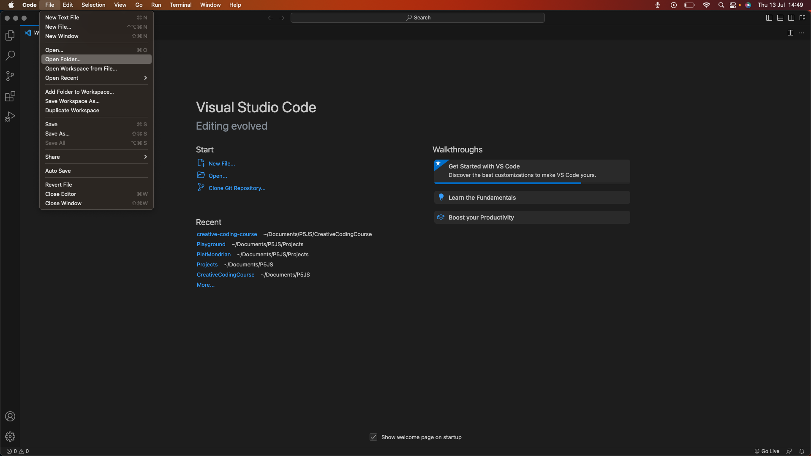
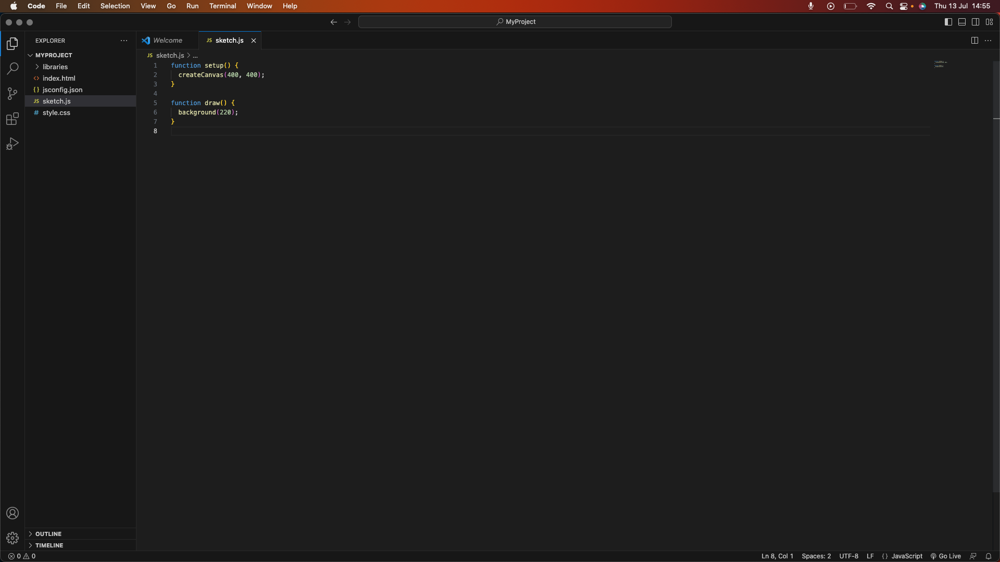

Download and install Visual Studio Code from here.
Create a new folder on your computer where you want to store your p5.js projects. Open Visual Studio Code and go to File -> Open Folder, and select the folder you just created.
In Visual Studio Code, we use extensions to enhance our development experience. Follow these steps to download the necessary extensions:
The "p5.vscode" extension provides p5.js project templates and helpful snippets, while the "Live Server" extension allows you to run your p5.js sketches locally in a browser.
A typical p5.js project folder includes the following files:
To simplify the creation of a p5.js project folder, you can use the p5.vscode extension:
The "p5.vscode" extension will automatically create the project folder structure for you. This files included in the newly created project are: index.html, sketch.js, style.css, jsconfig.json and a libraries folder.
With the "Live Server" extension, you can easily run your p5.js sketches locally:
Whenever you make changes to your p5.js code and save the file, the browser will automatically refresh and show the updated sketch.